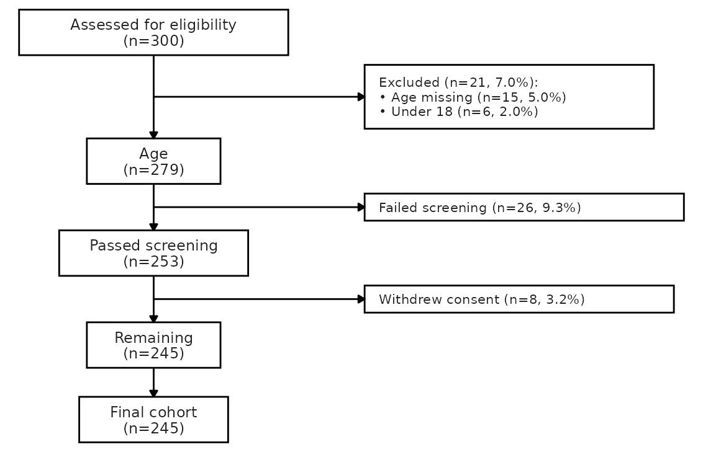

library(cohortflow)
dat <- mock_parallel_rct(n_participants = 300, seed = 2024)A criteria pipeline is an ordered list of steps. This article covers what a step can say, how labels and categories appear in reports, how missing values are handled, and the step types for grouped data.
Step types at a glance
| Builder | Acts on | Keeps | Typical use |
|---|---|---|---|
include() |
each row | rows where the condition is TRUE
|
“Aged 18 or over” (reason: “Under 18”) |
exclude() |
each row | rows where the condition is not TRUE
|
“Withdrew consent” |
group_include() |
each group (by) |
every row of groups where the condition is TRUE
|
“Cluster recruited 20 or more” |
group_exclude() |
each group (by) |
every row of groups where the condition is not
TRUE
|
“Site closed early” |
select_within() |
rows within each group (by) |
rows where the condition is TRUE within their
group |
“First admission per patient” |
randomise() |
nothing | every row | marks the allocation point |
Steps run in order, and each one sees only the rows that survived the steps before it. Changing the order changes the counts, so put the steps in the order your protocol describes.
Writing conditions
Formulas
Most conditions are one-sided formulas. Column names are used
directly, as in dplyr::filter():
cf_criteria() |>
include(~ age >= 18 & age < 80, label = "Aged 18 to 79") |>
include(~ sex %in% c("F", "M"), label = "Sex recorded as F or M")
#> Cohort criteria pipeline (2 steps)
#> 1. [+][~] (include) Aged 18 to 79
#> age >= 18 & age < 80
#> 2. [+][~] (include) Sex recorded as F or M
#> sex %in% c("F", "M")A name that is not a column is looked up where the formula was
written, so thresholds can live in ordinary variables. If a variable and
a column share a name, use the .data and .env
pronouns to say which you mean:
min_age <- 18
crit <- cf_criteria() |>
include(~ age >= min_age, label = "Adult") |>
include(~ .data$age >= .env$min_age, label = "Adult (explicit)")Functions
A condition can also be a function that takes the data frame and returns a logical vector, one value per row. Functions suit conditions that are reused or too long for a formula:
is_adult <- function(d) !is.na(d$age) & d$age >= 18
cf_criteria() |>
include(is_adult, label = "Adult")
#> Cohort criteria pipeline (1 step)
#> 1. [+][f] (include) Adult
#> !is.na(d$age) & d$age >= 18In printed pipelines, [~] marks a formula and
[f] a function. Formulas can be checked before any data is
touched (see Catching mistakes
early) and always survive a round trip to YAML; functions are more
flexible but can’t be checked, and complex closures may not survive the
round trip.
Labels and categories
Every step needs a label. It names the step in printed
flows, attrition tables and diagrams. Write it the way the step
reads:
- For
include(),group_include()andselect_within()the label describes the rows kept (“Aged 18 or over”). - For
exclude()andgroup_exclude()it describes the rows removed (“Withdrew consent”).
Inclusion steps can also take a reason, describing the
rows they remove (“Under 18”). Diagrams use it in exclusion boxes.
Exclusion steps don’t need one, because their label already says who was
removed.
A category groups consecutive steps under one
heading.
crit <- cf_criteria() |>
include(~ !is.na(age), label = "Age recorded", reason = "Age missing",
category = "Age") |>
include(~ age >= 18, label = "Aged 18 or over", reason = "Under 18",
category = "Age") |>
include(~ eligible_screen, label = "Passed screening", reason = "Failed screening") |>
exclude(~ withdrew, label = "Withdrew consent")
flow <- apply_criteria(dat, crit, id = "participant_id")Here is where each piece of text ends up in the diagram:
as_consort_diagram(flow)
Every number sits beside text that describes those people:
- A main box shows the number remaining after the
step. An inclusion step shows its label there; a category shows the
category name; an exclusion step shows “Remaining”
(
remaining_label), since its label is about the people who left. - A side box shows how many the step removed: beside
the
reasonfor an inclusion step, or beside the label for an exclusion step. A category’s side box lists each step’s reason with its own count.
An inclusion step with no reason gets a side box that
just says “Excluded”. Inside a category it would be listed under its
label, which reads backwards (“Aged 18 or over (n=6)” for six people
under 18), so as_consort_diagram() warns and asks for a
reason. Attrition tables list every step by its label
beside a “Removed” column.
Categories only group consecutive steps, because reordering steps would change the counts. If a category’s steps are split up, cohortflow warns and reports them as separate groups:
split_crit <- cf_criteria() |>
include(~ !is.na(age), label = "Age recorded", category = "Age") |>
include(~ eligible_screen, label = "Passed screening") |>
include(~ age >= 18, label = "Aged 18 or over", category = "Age")
tbl <- as_attrition_tibble(apply_criteria(dat, split_crit, id = "participant_id"))
#> Warning: Category "Age" appears in non-consecutive steps.
#> ℹ Steps are collapsed into one category row only when they are consecutive.
#> ℹ Reorder the criteria pipeline so each category's steps are adjacent.Set show_categories = FALSE in any report function to
show one row per step instead.
Missing values
A condition can evaluate to NA, for example
age >= 18 when age is missing. The two
row-wise step types treat NA differently:
-
include()treatsNAas failing: the row is removed. -
exclude()treatsNAas not matching: the row is kept.
Both are reasonable defaults, but they give different cohorts. In this dataset 15 people have no recorded age. Compare two ways of writing “adults only”:
as_include <- cf_criteria() |>
include(~ age >= 18, label = "Aged 18 or over")
as_exclude <- cf_criteria() |>
exclude(~ age < 18, label = "Under 18")
flow_inc <- apply_criteria(dat, as_include, id = "participant_id")
flow_exc <- apply_criteria(dat, as_exclude, id = "participant_id")
c(include = nrow(cohort(flow_inc)), exclude = nrow(cohort(flow_exc)))
#> include exclude
#> 279 294The include() version removed the 15 people with missing
age along with the 6 under-18s; the exclude() version kept
them. Neither is wrong, but the reported denominator differs, and
nothing in either table says why.
The fix is to state the intent. Either handle NA in the
condition itself:
include(~ !is.na(age) & age >= 18, label = "Adult with age recorded")
exclude(~ is.na(withdrew) | withdrew, label = "Withdrew or status unknown")or, better for reporting, give missing data its own step so it gets its own line in the table and diagram:
explicit <- cf_criteria() |>
include(~ !is.na(age), label = "Age recorded") |>
include(~ age >= 18, label = "Aged 18 or over")
as_attrition_tibble(apply_criteria(dat, explicit, id = "participant_id"))
#> # A tibble: 4 × 6
#> row_type label indent_level n n_removed pct_removed
#> <chr> <chr> <int> <int> <int> <dbl>
#> 1 header Assessed for eligibility 0 300 NA NA
#> 2 step Age recorded 1 300 15 5
#> 3 step Aged 18 or over 1 285 6 2.1
#> 4 final Final cohort 0 279 NA 93To see the raw TRUE/FALSE/NA
value of each condition for every row, use
criteria_status() with
mode = "independent":
status <- criteria_status(flow_exc, mode = "independent")
table(`Under 18` = status[["Under 18"]], useNA = "ifany")
#> Under 18
#> FALSE TRUE <NA>
#> 6 279 15Grouped steps (below) have one more rule: a row whose by
column is NA can’t be placed in a group, so grouped steps
always remove it.
Grouped data
Whole groups: group_include() and
group_exclude()
These evaluate the condition once per group, like
dplyr::summarise(), and keep or drop every row in
the group. The condition must return a single TRUE or
FALSE per group, so it uses summary functions such as
n(), mean() or any().
Here, in a cluster-randomised trial, clusters are only kept if at least 25 of their participants consented:
cl <- mock_cluster_rct(seed = 1)
crit_cl <- cf_criteria() |>
include(~ !is.na(consent_date), label = "Consented") |>
group_include(by = "cluster_id", ~ n() >= 25,
label = "Cluster has 25 or more consented") |>
group_exclude(by = "cluster_id", ~ mean(withdrew) > 0.05,
label = "Cluster withdrawal over 5%")
apply_criteria(cl, crit_cl, id = "participant_id")
#> Cohort flow (3 steps | 480 -> 232 rows | 248 excluded)
#> ------------------------------------------------------------
#> 1. [+] Consented
#> n_in: 480 kept: 360 removed: 120
#> 2. [+] Cluster has 25 or more consented by cluster_id
#> n_in: 360 kept: 285 removed: 75
#> 3. [-] Cluster withdrawal over 5% by cluster_id
#> n_in: 285 kept: 232 removed: 53Note the order: the cluster-size rule counts only the people who survived the “Consented” step. Applied first, it would count everyone. The Hierarchical and cluster designs article shows how to report these losses as clusters as well as participants.
Rows within groups: select_within()
select_within() evaluates its condition within
each group and keeps the rows where it is TRUE. It is the
natural way to pick one record per person, such as the index admission
or the first period of a crossover trial:
co <- mock_crossover(n_participants = 120, seed = 1)
crit_first <- cf_criteria() |>
select_within(by = "participant_id", ~ period == min(period),
label = "First period only")
apply_criteria(co, crit_first, id = "event_id")
#> Cohort flow (1 step | 240 -> 120 rows | 120 excluded)
#> ------------------------------------------------------------
#> 1. [>] First period only by participant_id
#> n_in: 240 kept: 120 removed: 120by takes several columns for a composite key, for
example by = c("cluster_id", "period") for each
cluster-period of a stepped-wedge trial.
The randomisation point
randomise() records where allocation happens: the
randomisation unit (by) and the column holding the
allocated arm (arms). It removes nobody, but the reporting
functions use it:
-
as_consort_diagram()splits into one column per arm at that point, so later exclusions are reported per arm. -
as_attrition_table()andas_attrition_tibble()break the final count down by arm. -
as_attrition_tibble()adds apost_randomisationcolumn marking steps at or after allocation. Exclusions after randomisation can bias the comparison, so reviewers look for them specifically.
cf_criteria() |>
include(~ eligible_screen, label = "Passed screening") |>
randomise(by = "participant_id", arms = "arm") |>
exclude(~ withdrew, label = "Withdrew after allocation")
#> Cohort criteria pipeline (3 steps)
#> 1. [+][~] (include) Passed screening
#> eligible_screen
#> 2. [R][-] (randomise) [by: participant_id] [arms: arm] Randomised
#> <none>
#> 3. [-][~] (exclude) Withdrew after allocation
#> withdrewFor cluster randomisation, use the cluster column as
by.
Catching mistakes early
Before any step runs, apply_criteria() checks that every
formula only uses columns that exist. A typo or a forgotten join fails
straight away and names the steps involved, instead of failing halfway
through with object 'x' not found:
crit_typo <- cf_criteria() |>
include(~ !is.na(bmi), label = "BMI recorded") |>
exclude(~ smoker, label = "Current smoker")
apply_criteria(dat, crit_typo, id = "participant_id")
#> Error in `.check_criteria()`:
#> ! Criteria refer to column(s) not found in `data`.
#> ✖ Criterion 1 "BMI recorded" refers to column(s) not in data: bmi.
#> ✖ Criterion 2 "Current smoker" refers to column(s) not in data: smoker.Run the same check yourself with
check_criteria(criteria, data), for example in a test that
the criteria still match the latest data extract.
Building pipelines from pieces
Pipelines combine with c() and subset with
[, so shared blocks of criteria can be defined once and
reused across analyses:
screening <- cf_criteria() |>
include(~ !is.na(age), label = "Age recorded") |>
include(~ age >= 18, label = "Aged 18 or over")
follow_up <- cf_criteria() |>
exclude(~ withdrew, label = "Withdrew consent")
full <- c(screening, follow_up)
length(full)
#> [1] 3
full[2:3]
#> Cohort criteria pipeline (2 steps)
#> 1. [+][~] (include) Aged 18 or over
#> age >= 18
#> 2. [-][~] (exclude) Withdrew consent
#> withdrewTo add steps to a flow that has already been applied, for
example once new data arrives, use continue_criteria(),
covered in Staged
pipelines and missing units.